01Сборка
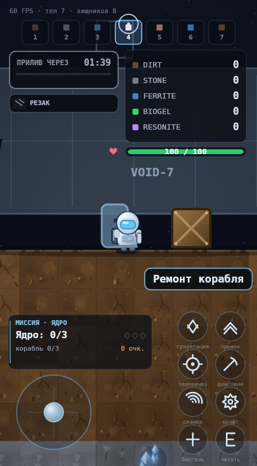
GRAVITY: VOID — M8.2
E у люка корабля — меню ремонта · E у обелиска — архив ·
E у кристалла — фрагмент или резонит · Backspace — сброс мира и сюжета
Сюжет подключается строкой <script src="narrative.js"> после игры
Во фрейме на этой странице сюжет не подключён —
ровно потому, что им нельзя править gravity-void.html. Это честная проверка
того, что игра работает и без него. Чтобы поиграть с сюжетом — добавьте одну строку из §02
и откройте gravity-void.html или index.html.
02Подключение — одна строчка
В конец gravity-void.html, после закрывающего </script>
самой игры и перед </body>:
// хвост gravity-void.html } catch (e) { showFallback((e && e.stack) || e); } </script> <script src="narrative.js"></script> ← эта строка, единственная правка </body> </html>
Почему после игры, а не в <head>
- Сюжет расширяет класс
Gameи берёт уже созданный экземплярgame. Оба появляются только после скрипта игры. gameобъявлен черезlet: следующему<script>той же страницы он виден, а свойствомwindow— нет.- Если игра ещё не готова,
narrative.jsдо 2 секунд пробует подключиться снова; еслиGameнет вовсе — предупреждение в консоль и всё. - Работает и без правки файла:
Narrative.attach(game)из консоли после загрузки страницы.
Пять обёрток вместо врезки в код
update— сначалаnarrative.preUpdate(), потом оригинал.drawTerminals— рисует мир сюжета: корабль, фрагменты, жилы, архивы, подсказки.drawHud— карточка журнала, меню ремонта, панель архива, финал.updateMouse— в меню ремонта мышь принадлежит меню, а не копанию.resetWorld—Backspaceсбрасывает и сюжет.
03Критерии M8.2
| Критерий | Как сделано | |
|---|---|---|
Класс Ship со стадиями 0–3 |
repairStage 0…3, interact(game) открывает меню ремонта,
update(game) следит за сменой стадии |
да |
| Цены ровно из задания | 20 FERRITE + 10 STONE → 30 STONE + 10 FERRITE → 5 RESONITE. Проверено тестом по каждому числу | да |
| Награда при смене стадии | Рецепт в журнал, очки (+500 / +750 / +1000) и предмет в руки:
резак, броня, пушка. Ровно один раз на стадию — через lastStage |
да |
| Журнал: «Ядро: 1/3» в HUD | QuestLog.text() возвращает эту строку дословно; в HUD ещё три ромбика,
стадия корабля и очки |
да |
| Пять терминалов с текстами | Дневник капитана, экспедиция, протокол «Присвоение», инструкция по сборке, финальный аккорд — первые строки дословно из задания | да |
| Три фрагмента на карте | (59,13), (103,13), (167,13) — зал, три разные трети карты | да |
| Сбор по клавише E | preUpdate забирает E раньше игры; у каждого объекта своя подсказка |
да |
| С 3/3 открывается финал | Ship.canActivateCore() требует собранный двигатель и три фрагмента;
без ядра активация не срабатывает (тест) |
да |
| M8.3 · корабль на спавне и люк на тайле 20 | tx0 16, tx1 25, doorTile 20; меню по E
открывается сразу после старта |
да |
M8.3 · никаких game.ship и заглушек |
shipNear/drawShip в игру не подставляются, в коде нет
обращений к game.ship |
да |
| M8.3 · резонит как ресурс игры | Счётчик заводит игра, добыча через inventory.add(8, n),
сейв — на стороне игры; шим остался только для старых сборок |
да |
Только narrative.js, игра не тронута |
git diff по gravity-void.html пуст; старые 344/344 проходят
без единой правки |
да |
04M8.3 — слияние мира и сюжета
Игра перестала быть чужой территорией: корабль встал на спавн, резонит стал её собственным ресурсом, заглушки из сюжета убраны.
Корабль на спавне
SHIP:tx0 16,tx1 25, люк — тайл20. Корпус накрывает точку появления, люк на четыре тайла правее неё.- Игрок не появляется внутри корпуса: ряд над полом на спавне свободен (проверка).
- Меню ремонта открывается по E у люка сразу после старта — проверено отдельным тестом на тайле 20.
- Корпус поднят на стойках: 30 px просвета под брюхом, игрок и ящики проходят под кораблём, а не прячутся за ним.
Резонит — ресурс игры
- Игра объявила его в
CFG.resources— сама заводит счётчик, рисует в HUD и сохраняет. Ручнойcounts[8] = 0из сюжета убран. - Добыча идёт через
inventory.add(8, n.amount). Тест: число, а неNaN. - Осталась страховка
Narrative.ensureResonite()для сборки, где ресурса ещё нет. В M8.3 она возвращаетfalseи ничего не трогает — это проверено.
Без заглушек
game.shipNearиgame.drawShipне подставляются: в игре их нет (undefined), вNarrative.attach— тоже.- В сюжете нет обращений к
game.ship— только к своемуthis.ship.
Сейв
state()по-прежнему кладётthis.ship.state().load()подхватывает стадию ремонта и финальный аккорд — проверено на пустомShipс сохранениемstage 2иstage 3 / core.
05M9 — арсенал и угрозы
Ремонт перестал быть галочкой в журнале: каждая стадия кладёт в руки оружие, которым стреляет боевая система. Файл игры по-прежнему не тронут ни на строку.
Награда — оружие, а не рецепт
- Стадия 1 «ЗАЛАТАТЬ КОРПУС» →
player.hasLaserPistol = true, рецепт «ЛАЗЕРНЫЙ ПИСТОЛЕТ» (был «ПРИВОД КОРПУСА»). - Стадия 2 «ДВИГАТЕЛЬ» →
player.hasGravityGun = true, рецепт «ГРАВИ-ПУШКА». - Старые флаги
hasLaser/hasArmorвыставляются рядом: по ним HUD игры рисует иконки экипировки. Конфликта нет — проверено тестом.
Повторная выдача не ломается
- Одна точка выдачи —
Narrative.giveWeapon(player, weapon, legacy)с проверкойplayer[weapon] !== true. - Игрок скрафтил лазерный пистолет сам → функция возвращает
null, флаг не перезаписывается, в уведомлении нет ложного «получил». - Тест: полный ремонт выдаёт оба флага; повторный вызов —
null.
Сейв не затирает боевые флаги
state()пишет снимокweaponsпо пройденным стадиям.load()только досдаёт недостающее: оружие не снимается никогда — ни когда его нет в снимке, ни когда игра восстановила флаг сама.- Старый сейв M8.3 (стадии есть, блока
weaponsнет) догоняет награду при загрузке.
Видно, что игрок вооружён
- Журнал: «вооружён: ЛАЗЕР +1» вместо «корабль 2/3». Карточка расширена 178 → 200 px, длинная строка режется по словам и не наезжает на очки.
- Меню ремонта:
→ ЛАЗЕРНЫЙ ПИСТОЛЕТсправа от цены, подвал «в руках: …» и «открыто: N». - Финальная панель: «арсенал: ГРАВИ-ПУШКА · ЛАЗЕР · РЕЗАК».
ПКМ и телекинез: сюжет не мешает
- Проверено настоящими событиями канваса:
mousedown(button 2)у корабля, архива и фрагмента — захват начинается, ящик едет, отпускание отпускает. С сюжетом и без него результат одинаковый. preUpdateчитает толькоKeyE / Escape / Enterи цифры;MouseRightон не забирает. Грави-пушка — та же механика (радиус 8 → 15 тайлов, тяга сильнее), конфликта нет.- Починен настоящий дефект обёртки:
dt * 0не отключает действия по фронту кнопки, поэтому клик в меню ремонта ещё и начинал телекинез (и ставил блок в режиме постройки). Теперь в кадре с панелью кнопки гасятся, захват отпускается; панель архива тоже перестала пропускать клики в мир.
Телекинез «не двигает / двигает рывками» — это физика игры
Дифференциальный прогон tools/grab-ab.mjs:
один и тот же ввод двумя настоящими событиями канваса в чистую игру и в игру
с сюжетом.
- 0 расхождений на 45 кадрах (`x`, `y`, `vx`, `vy`, позиция игрока,
`mouse.right`, `grab`); на шести сценах — «кадры идентичны: true».
Если намеренно передавать в игру
dt * 0, A/B даёт 187 расхождений и тест падает — значит тест сторожитdt. - В логе конца:
right=true, grab=true, ящик прошёл 62 px и встал на 37 px от игрока, до курсора осталось 65 px (курсор уехал за игроком). - Причина:
grabOffset = 34меньше, чем требуют18 + 11 + 6 = 35вseparateFromPlayer. Один пиксель — и система балансирует на границе: скорость срезается и снова разгоняется. - Дрожание растёт с FPS: 3 смены знака скорости на 30 fps → 26 на 120 fps
при одинаковом пределе 36.4–36.7 px. Это пружина
updateGrabбез скоростного демпфирования. - «Ящик сам едет вперёд» воспроизведено в чистой игре без сюжета:
после отпускания ПКМ скорость замирает на 29.48 px/s и держится 600 кадров
(10 с), ящик проползает 297 px — у
PhysBodyнет трения о землю,resolveXгасит скорость только о стену. В захвате пик 357 px/s — лимит M7 (400) не превышен, ввод в порядке. - Проблема в
updateGrab/releaseGrab/PhysBody.stepвнутриgravity-void.html, требуется Агент 1. Правки сюжета не делают: файл игры не тронут.
Две оговорки, которые нужно знать ревьюеру
- В
gravity-void.htmlэтой ветки поляhasLaserPistolещё нет: боевая система Агента 1 сюда не влита, игра знает толькоhasGravityGun.narrative.jsставит флаг сам, поэтому награда работает и на текущей сборке, а когда правки приедут — найдёт поле уже существующим. - Штатный сейв игры сохраняет из экипировки только
d.player.gun. Лазерный пистолет держит снимокweaponsв сейве сюжета — после F5 оружие не пропадает.
06Что работает
Корабль VOID-7
- Стоит на поверхности у старта (тайлы 38–47): корпус с обшивкой, купол кабины, пробоины, мёртвый двигатель с искрами, три точки-индикатора стадий.
- Люк пульсирует, когда рядом игрок. E открывает меню ремонта.
- После стадии 1 в кабине загорается свет, после 2 — заплатки вместо пробоин, после 3 — живое ядро резонанса в двигателе.
- Меню: четыре строки с ценами, «не хватает 2 × STONE, 6 × FERRITE», порядок стадий не перескочить, попадание мышью и пальцем, на узком экране сжимается до 0.78.
Журнал квестов
- Карточка «МИССИЯ · ЯДРО» слева снизу: строка
Ядро: 2/3, три ромбика, «корабль 2/3» и очки. - На телефоне карточка стоит над джойстиком — проверено пересечением прямоугольников
с сеткой кнопок и джойстиком:
ок / ок. - Очки: +250 за фрагмент, +100 за архив, +500/+750/+1000 за стадии, +2000 за финал.
Пять архивов
- Отдельные обелиски с рунами: первые три в зале, два — в Глубоких пещерах (ряды 67 и 93).
- Панель чтения со своим текстом и честной наградой «архив открыт: +100 очков» — панель игры всегда дописывала бы «+5 FERRITE».
- Текст переносится по словам: на 430 px строка архива влезает целиком.
Фрагменты и резонит
- Три фрагмента — светящиеся осколки, качаются в воздухе, подписаны «1/3…3/3». Сбор по E, сразу счётчик и сейв.
- Резонит — новый ресурс id 8, три жилы по 2 единицы в глубине (6 при нужде 5).
- Своя вспышка у резонита: штатный
Particles.pickupищет цвет в таблице ресурсов игры, а id 8 там нет.
Финал
- Двигатель собран + 3/3 фрагментов → в меню открывается «ФИНАЛЬНЫЙ АККОРД».
- Панель: «Ядро собрано. Корабль слушает.» + итоговые очки, закрывается Esc/Enter/E.
Сохранение и сброс
- Свой ключ
gravity-void-narrative-v1: стадии, фрагменты, архивы, жилы, резонит и очки. Формат сейва игры не тронут. - Новая игра подхватывает сюжет из сейва (проверено отдельным экземпляром). Backspace сбрасывает и мир, и сюжет.
07Дефекты и ограничения
| Что | Почему | Насколько важно |
|---|---|---|
| Резонит в HUD — с M8.3 | Закрыто: игра объявила RESONITE в CFG.resources, и он виден
в правом столбце наравне с остальными. До M8.3 ресурс жил только в сюжете
и был виден лишь как цена стадии. |
снято |
| Терминал игры и архив могут стоять рядом | Древние терминалы игры расставляются от сида, архивы — по фиксированным точкам. E отдаётся ближайшему сюжетному объекту; терминал читается, когда рядом нет архива/фрагмента/жилы (тест это проверяет). | косметика |
| Корабль не летит | Финал — текстовая панель. Анимация отлёта потребовала бы менять мир игры (удалять корпус, двигать камеру), а это уже не «сюжетный слой». | скоуп |
| Во фрейме на этой странице сюжета нет | Фрейм грузит gravity-void.html без строки подключения — так и задумано.
С сюжетом — после правки из §02. |
ожидаемо |
В игре пока нет hasLaserPistol (M9) |
Боевая система Агента 1 в эту ветку не влита: игра знает только
hasGravityGun и сохраняет из экипировки лишь d.player.gun.
Сюжет ставит флаг сам и держит его в снимке weapons своего сейва,
поэтому награда работает и после F5. Когда правки приедут — конфликта не будет. |
внешнее |
| Формат рецептов «свой» | Открытые рецепты — строки в журнале плюс оружие в руках игрока
(hasLaser / hasLaserPistol / hasGravityGun, M9). В меню крафта игры
новые рецепты не появляются: это потребовало бы правки CFG.recipes. |
известно |
08Скоуп и решения
| Что | Почему так | Что делать |
|---|---|---|
| Ноль правок в gravity-void.html требование задания |
Вместо врезки — пять обёрток над методами Game.prototype. Побочный плюс:
игру можно проверить и с сюжетом, и без него, а падение сюжета не роняет игру —
всё в try/catch с предупреждением в консоль. |
Если разрешите править игру — первым делом резонит в HUD и рецепты в меню крафта. |
| Резонит = id 8 архитектура |
0–5 в игре заняты тайлами и биогелем. 8 — свободный ключ в том же инвентаре, поэтому сейв игры его сохраняет, а сюжет — восстанавливает. | Фиксирую. |
| Своя панель архива честность текста |
Панель лора игры всегда пишет «запас древних: +5 FERRITE, +1 BIOGEL». Для архива, который даёт очки, это была бы ложь. Стиль тот же, слова — свои. | Можно переиспользовать панель игры, если ложная строка не смущает. |
| Точки «приземляются» на пол устойчивость |
Координаты заданы под штатный сид. После загрузки чужого сейва карта другая —
settle() ищет рядом свободное место с полом под ним. |
Фиксирую. |
| Отдельный ключ сейва совместимость |
Формат сохранения игры (v:3) не тронут: сюжет пишет свой JSON и читает его
сам. Старые сейвы игры продолжают грузиться. |
Фиксирую. |
09Запросы ревью
1. Как реализован Ship.interact / update без правки игры?
Через обёртку Game.prototype.update: сюжет получает кадр
первым (preUpdate) и, если рядом люк, забирает E себе —
interact() открывает меню. После оригинала вызывается
narrative.update(), который дёргает Ship.update(game): тот сравнивает
repairStage с lastStage и выдаёт награду ровно один раз.
Награда — и запись в журнал, и реальный предмет в руки игрока.
2. Почему сюжетные объекты не конфликтуют с терминалами игры?
У E один владелец за кадр. preUpdate смотрит
ближайший сюжетный объект в радиусе 2.4 тайла: если он есть — E
потребляется и до игры не доходит. Если нет — E остаётся игре, и она читает
свой терминал как раньше (это отдельная проверка в тесте). Пока открыта панель архива
или меню ремонта, update игры вообще не получает ввод мыши.
3. Что делать с резонитом и рецептами, если правки игры разрешат?
Две строчки: CFG.resources.push({id: 8, name: 'RESONITE', …}) —
и резонит сам появится в правом столбце HUD (счётчик, пульсация, сейв: всё уже готово).
Второе — CFG.recipes: три новых рецепта, которые Ship.update уже
раздаёт в log.blueprints; останется показать их в меню крафта.
Плюс анимацию отлёта корабля в финале.
10Скриншоты
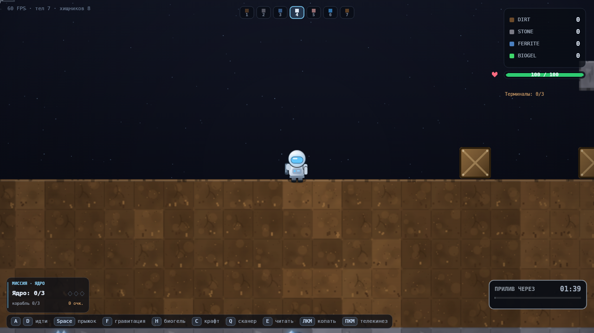
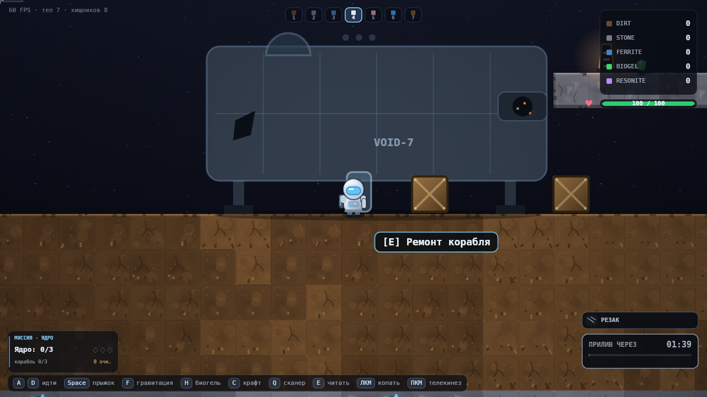
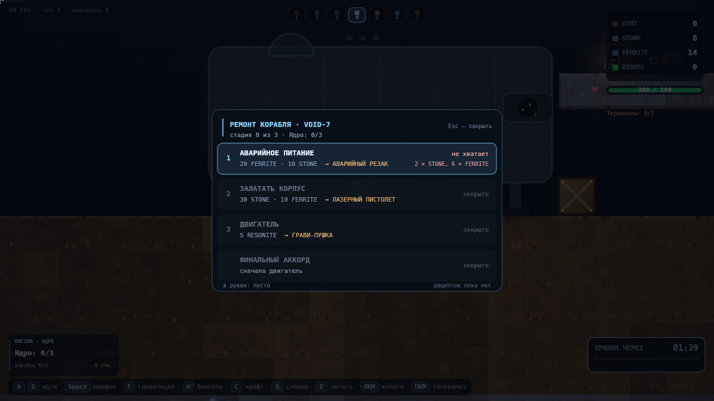
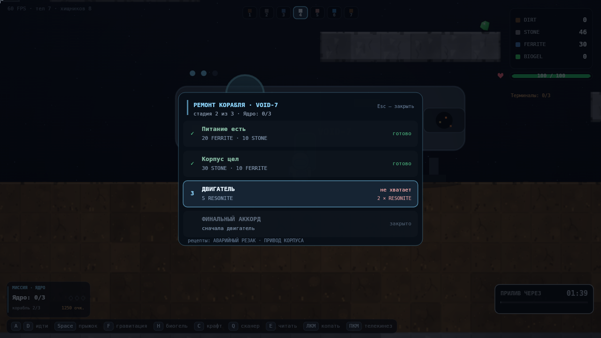
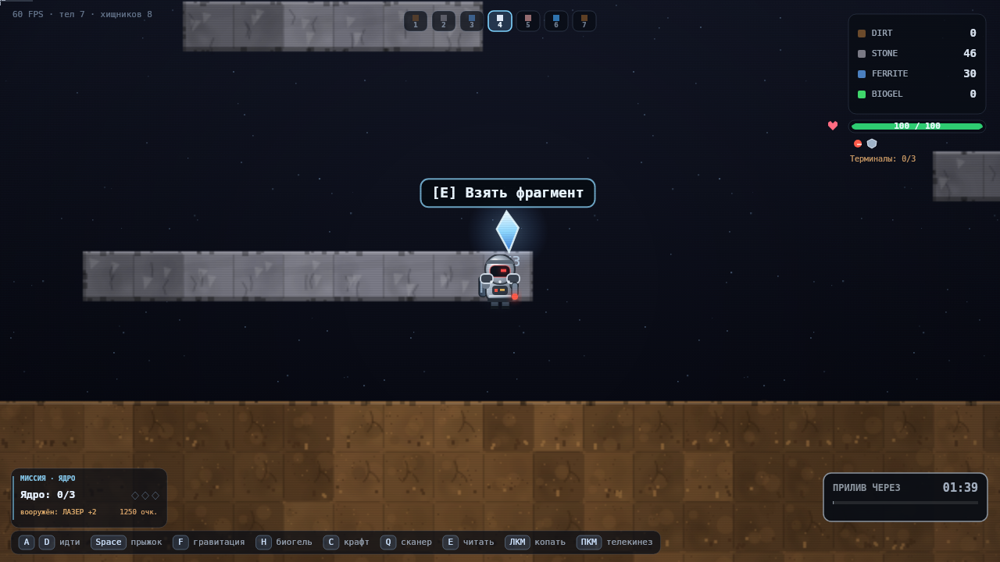
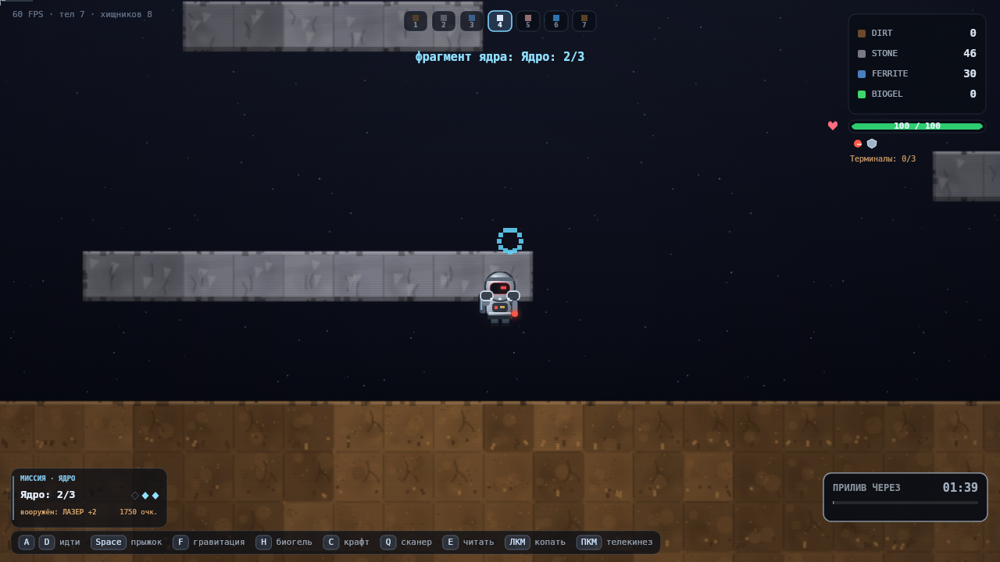
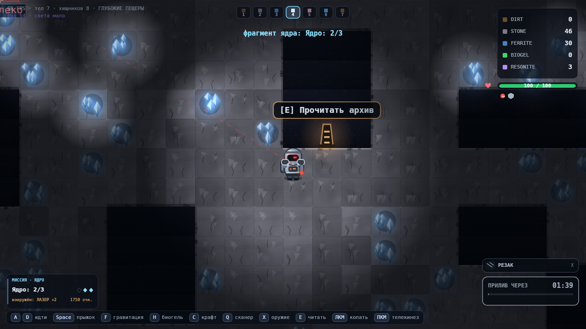
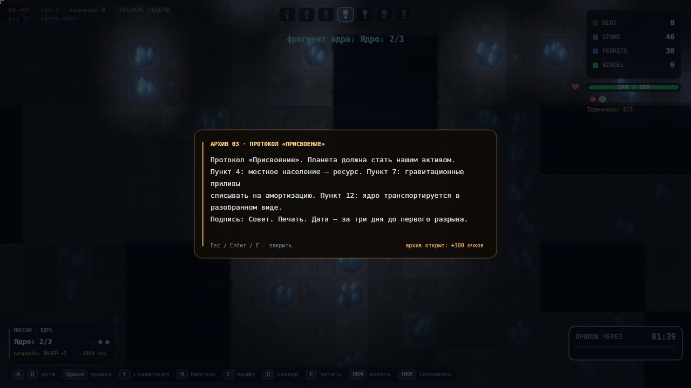
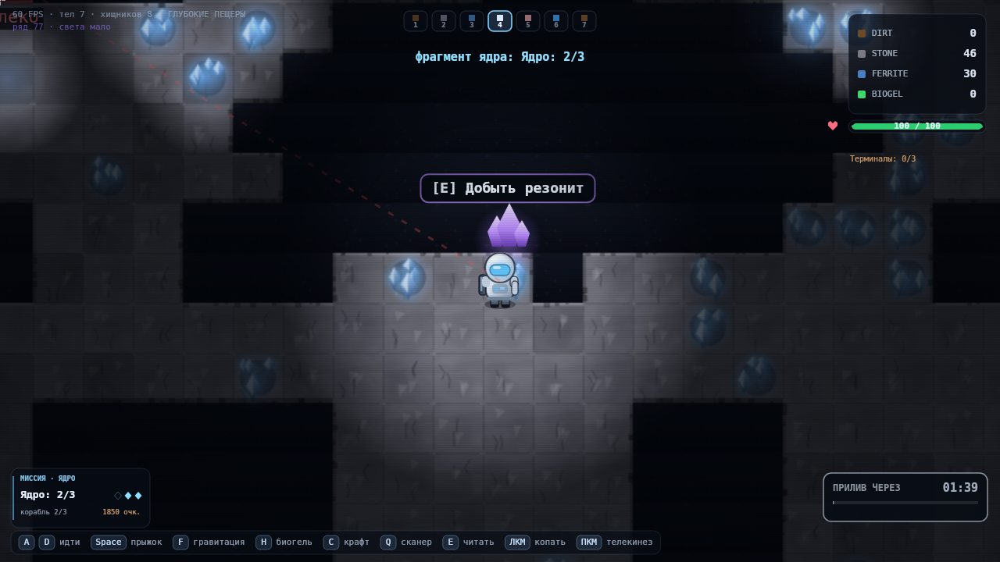
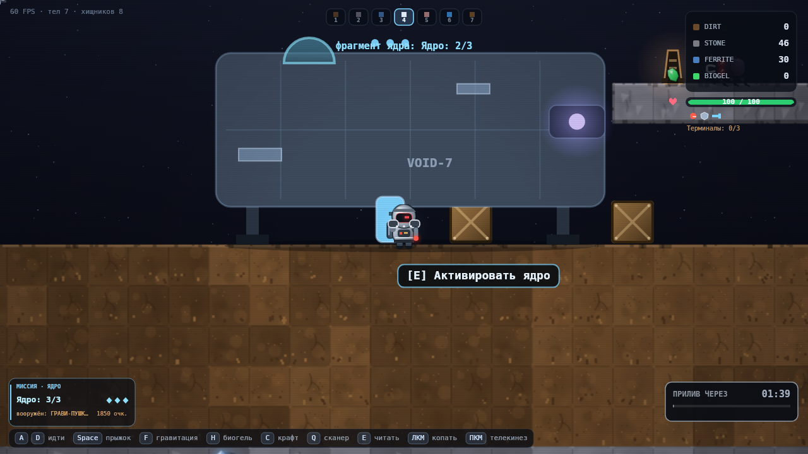
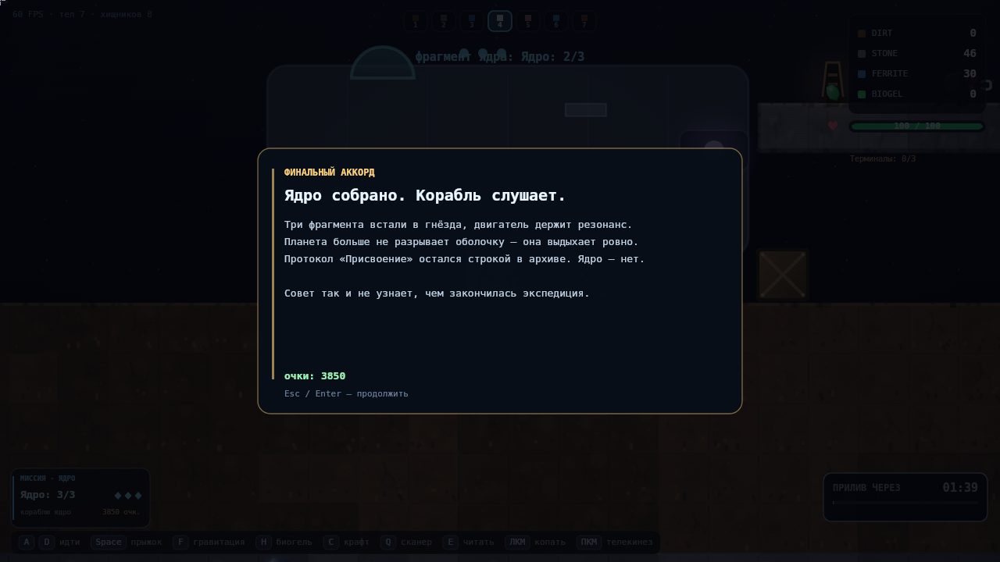
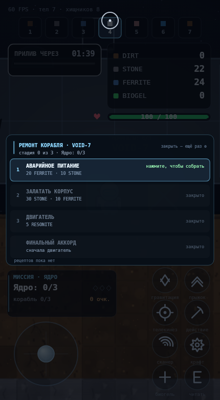
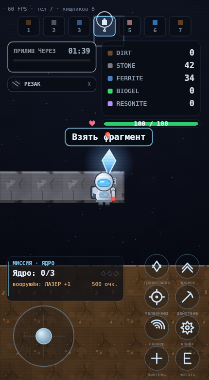
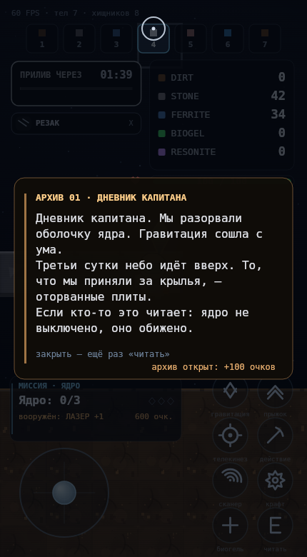
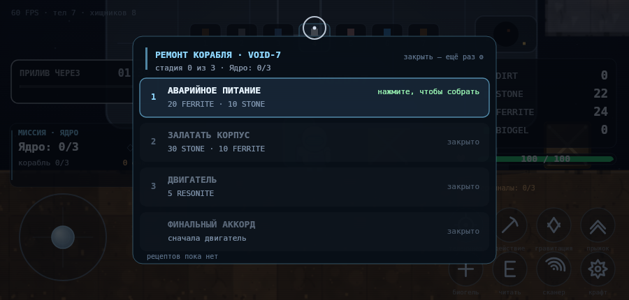
11Как проверено
# сюжет: 117 проверок поверх настоящей игры (M8.2 + M8.3 + M9) cd tools node verify-narrative.mjs # → 117/117 проверок пройдено # игра без сюжета — не сломана node verify.mjs # → 344/344 проверок пройдено # кадры node narrative-shots.mjs # → 11 кадров ПК (32…42) node narrative-touch-shots.mjs # → 4 кадра телефона (43…46) SUF=-land TW=900 TH=430 node narrative-touch-shots.mjs # → +4 в ландшафте node perf.mjs # → p50 6.65 мс, p95 8.25, p99 10.12 node verify-review-page.mjs # → структура страницы и запуск игры во фрейме
Что покрыто в M8.2 + M8.3 + M9
- Подключение: сюжет есть, классы доступны, терминалы игры на месте.
- Корабль: ровная площадка под корпусом, меню по
E, цены 20+10 / 30+10 / 5. - Стадии: без ресурсов не собирается, перескок запрещён, награда — рецепт + очки + предмет.
- Фрагменты: сбор, счётчик 0/3 → 1/3 → 3/3, повторный сбор не накручивает.
- Финал: без ядра закрыт, с 3/3 открывается, панель закрывается Esc.
- Архивы: пять текстов из задания, панель открывается/закрывается,
Eу терминала игры жив. - Сейв: пишется, подхватывается новой игрой, сбрасывается
Backspace. - Отрисовка не падает; меню ремонта влезает в экран, карточка журнала не перекрывает кнопки и джойстик.
- M8.3: корабль на спавне и не пересекает игрока, меню по E у люка на тайле 20,
нет
game.shipи заглушек, резонит — штатный ресурс, добыча безNaN. - M9: стадии объявляют
hasLaserPistol/hasGravityGunи реально их выставляют; повторная выдача возвращаетnullи не перезаписывает флаг; оружие, скрафченное игроком заранее, не мешает ремонту;state()пишет снимок,load()досдаёт оружие и не снимает его; старый сейв без блокаweaponsдогоняет награду. - M9 (мышь): ПКМ у корабля начинает телекинез, ящик реально смещается, отпускание
отпускает; то же с грави-пушкой; в открытой панели
press / startGrab / placeBlockне вызываются ни разу, а кнопки после кадра не теряются; после закрытия меню ПКМ снова работает. Тесты падают на старой обёртке (dt * 0) — регресс ловится. - M9 (A/B): одинаковый ввод в чистую игру и с сюжетом даёт
0 расхождений; ящик встаёт на 35–39 px от игрока, дрожание растёт с FPS (3 → 26 смен знака) — предел задаётgrabOffset, а не сюжет.
Чего проверки не делают
- Не проходят игру руками от начала до финала: маршрут «найти все три фрагмента» в тесте телепортирует игрока к точкам.
- Не проверяют читаемость текста на реальном телефоне при ярком солнце.
- Не проверяют поведение при чужом сейве на каждой возможной карте — только «точка попала в породу → ищем рядом пол».
- Не измеряют FPS в браузере: цифры — время JS+draw в headless-canvas.